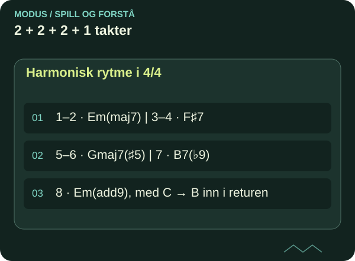

Da sju takter var nok
Gi siste dominant én takt, så to. Den samme rekken kan føles mer framoverlent når returen kommer én takt tidligere.
DETTE LÆRER DU
Da sju takter var nok
- Bruk 2+2+2+1 takter til å forme forventningen før tilbakekomsten.
Før du begynner
Treklanger og grunnleggende akkordlesing.

Tell hvor lenge klangene får virke
Spill en B-del i 4/4 med Em(maj7) i to takter, F♯7 i to, Gmaj7(♯5) i to og B7(♭9) i én. Vend så tilbake til Em(add9). Tell sju takter høyt. Den siste dominanten er i takt 7, og returen kommer på første slag i takt 8.

Les diagrammet som tekst
- Harmonisk rytme i 4/4: 1–2 · Em(maj7) | 3–4 · F♯7; 5–6 · Gmaj7(♯5) | 7 · B7(♭9); 8 · Em(add9), med C → B inn i returen
Hør forventningen og avviket
F♯7 kan peke mot B, men her kommer Gmaj7(♯5) først. Spill G–B–D♯–F♯ over G. Prøv å holde B når bassen går til B7(♭9). Spill så C over B7 og la C falle til B på Em(add9). På piano kan venstre hånd spille grunntonene og høyre hånd bære C–B. På gitar kan du ta opp bassen først og spille C på andre streng, første bånd, til åpen B i et eget spor.
Prøv én takt til
Spill samme form ved 72 slag i minuttet, men gi nå B7(♭9) to takter. La alle andre akkordlengder og melodivalg ligge fast. I åttetaktersversjonen kommer returen i takt 9. Lytt etter om den ekstra takten gir spenningen tid til å virke, eller om bevegelsen mot E blir mindre presserende.
FRA LESING TIL SPILLING
Prøv det selv.
Ta opp de to versjonene med samme tempo og lyd. Marker takt 7, returen og C→B. Kontroll: 2 + 2 + 2 + 1 gir sju takter før Em(add9). I den andre varianten kommer samme Em(add9) nøyaktig fire slag senere.
Prøv akkordene i ModusharmoniSJEKK FORSTÅELSEN
Hva sitter igjen?
Tre spørsmål om det du har lest. Alle tre riktige gir fullført quiz. Du kan prøve så mange ganger du vil.
Fullføring lagres i denne nettleseren og deles mellom norsk og engelsk.
Du har svart riktig på alle tre spørsmålene. Ta ideen med til instrumentet.
Til artikkelbiblioteket ↗︎